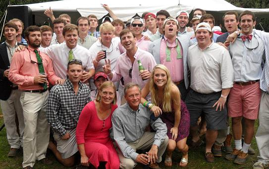

The Third Annual Oyster Roast was held at Deep Run Hunt Club on November 28, 2014. The event was our largest event to date. While the event was a big success, our family and friends will be forever impacted by losing a dear friend, Brendan Worst, the following week. Brendan was a close friend of Henry's and almost everyone who attended the Oyster Roast. He was a big supporter of The JHW Foundation.
Brendan and Henry. Long may you run! We love you and miss you!!
The second Oyster Roast to benefit The JHW Foundation, Inc. was held on November 28, 2013. Over 300 people attended the event held at The Deep Run Hunt Club.
The inaugural Oyster Roast to benefit The JHW Foundation, Inc. was held on November 23, 2012. Over 250 people attended the event held at The Deep Run Hunt Club.

In 2011, Henry's Fraternity, Kappa Sig at JMU, hosted the first fundraiser for The JHW Foundation, Inc.